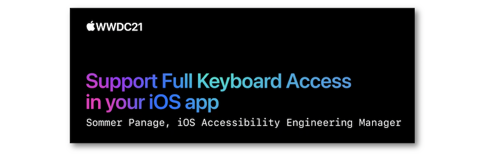
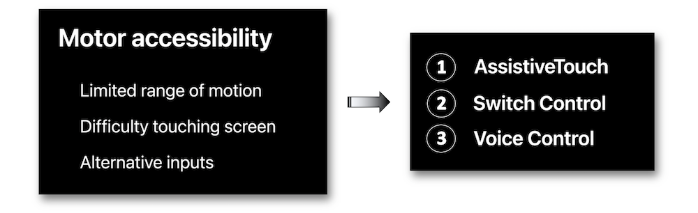
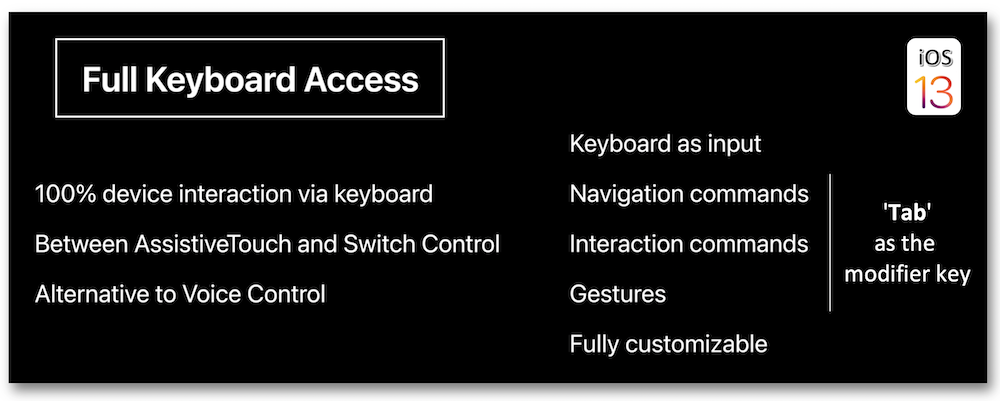
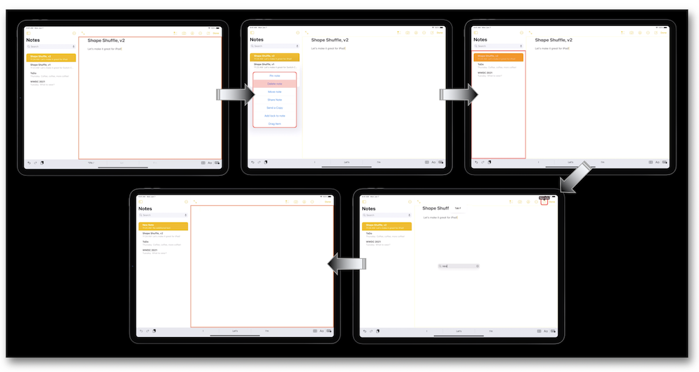
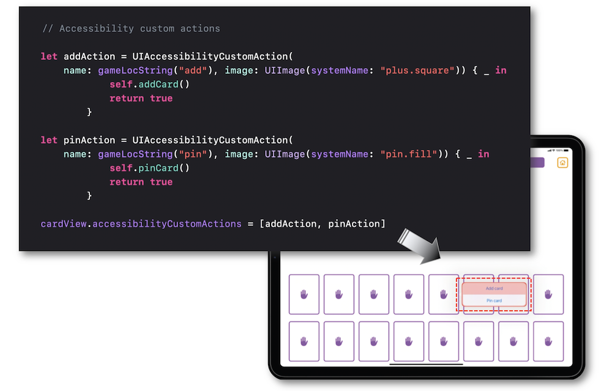
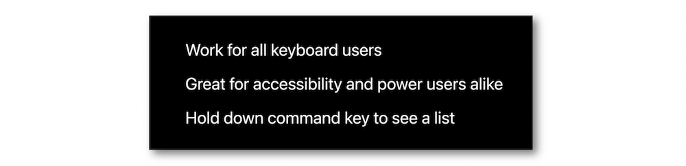
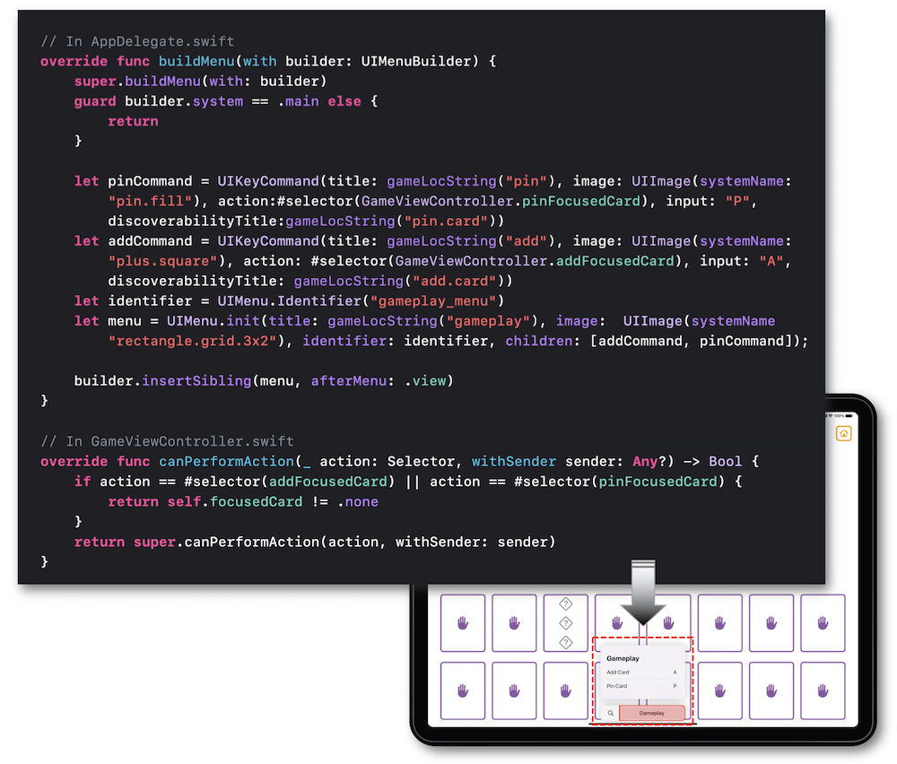
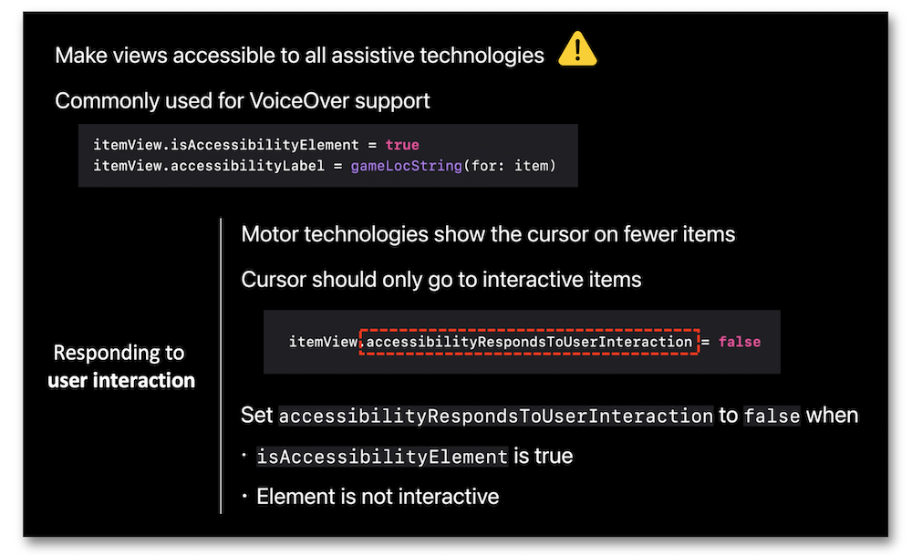
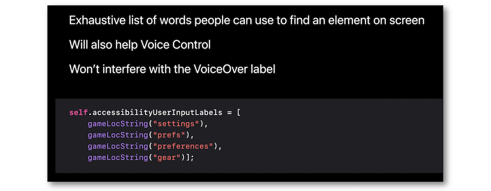
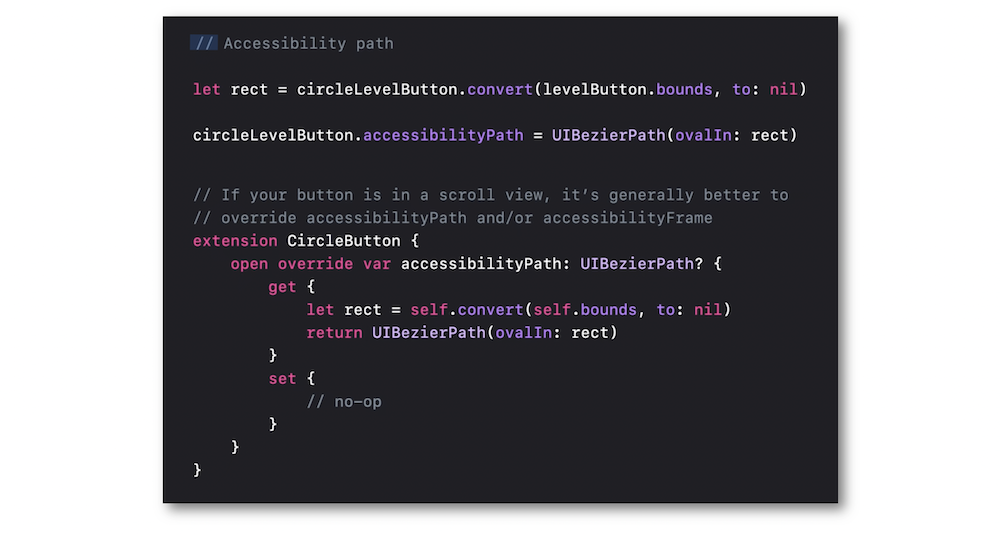

WWDC 2021: Support Full Keyboard Access in your iOS app
Find hereafter a detailed summary of the above named video which belongs to a taxonomy of some WWDC footages.
The original video is available on the official Apple website (session 10120).

"iPhone and iPad support numerous input modes for those with motor impairments, including touch interaction modification, Switch Control, and Full Keyboard Access. We'll explore how people can interact with their devices solely through keyboard input, working through a real-life example to discover key APIs. We'll also take you through some best practices for supporting motor accessibility when you integrate Full Keyboard Access in your apps."
Most of the illustrations are parts of the Apple presentations and may be available at the Resources section inside the Overview sheet of each video.
Hereafter, the underlined elements lead directly to the playback of the WWDC video at the appropriate moment.
Overview #
Apple has been making available a variety of assistive technologies for many years in order to improve the accessibility for people with motor impairment.

Introduced in iOS 13.4.1, the Full Keyboard Access technology has significantly improved the previous keyboard support supplied by iOS 9 through its complementarity with the other already existing assistive technologies.

A demo with the Full Keyboard Access enabled is highlighted so as to elaborate on the main shortcuts for using the Notes app as an example.

Actions #
Offering actions through the keyboard relies on two different concepts for completion: the custom actions and the keyboard shortcuts.
One of the main assets for implementing this kind of actions is the perfect compliance with VoiceOver and Switch Control.

🎬

This realization is restricted to the keyboard's users only which sets aside other assistive technologies that will need a dedicated implementation to be used.

Focus #
It's crucial to take care of the accessible elements that aren't introduced as is for the Full Keyboard Access (deliberately no possible interaction) while keeping a possible interaction for other assistive technologies.

Labels #
Creating a list of words defining each element likely to be searched (keyboard, voice) is the best way to substantially improve the user experience.

Shapes #
For visual enhancement, it's better to depict the basic shapes outlines to repoduce them as accurate as possible.

The final result of this implementation is highlighted to show up the improvement.